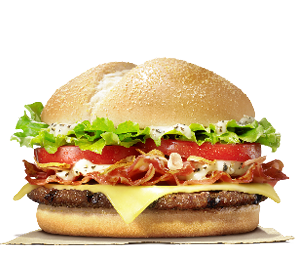
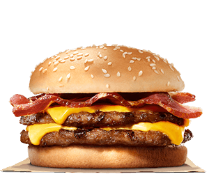

|
Our Texs Crunchy WHOPPER® Sandwich is a ¼ lb* of savory flame-grilled beef topped with juicy tomatoes, fresh cut lettuce, creamy mayonnaise, crunchy pickles, and sliced white onions on a soft sesame seed bun. With a Crunchy Potato Rosti & BBQ Sauce. |
The Angus Smoked Bacon & Cheese is made from 100% pure, succulent flame-grilled Angus beef. Topped off with applewood smoked bacon, delicious cheese, pickles, tomatoes, onions, lettuce, ketchup and mayo in a corn dusted bun. The only things good enough for this beautiful beast. |
 |
 |
Our BIG KING™ Sandwich features two savoury flame-grilled beef patties, topped with melted American cheese, fresh cut iceberg lettuce, crisp onions, crunchy pickles, and featuring a sweet thousand island style dressing, all on a warm, toasted, sesame seed bun. |
The Chicago Steakhouse is a 100% flame-grilled beef patty topped with bacon, cheese, crispy onion, Western BBQ sauce, lettuce and tomato. Served in a corn dusted bun. |
 |
 |
Our Long Texas BBQ features two beef patties topped with melted American cheese, tasty BBQ sauce and crispy onion rings, all served on a warm toasted long bun. |
Make room for our Bacon Double Cheeseburger, two signature flame-grilled beef patties topped with smoked bacon and two layers of melted American cheese on a toasted sesame seed bun. |
 |